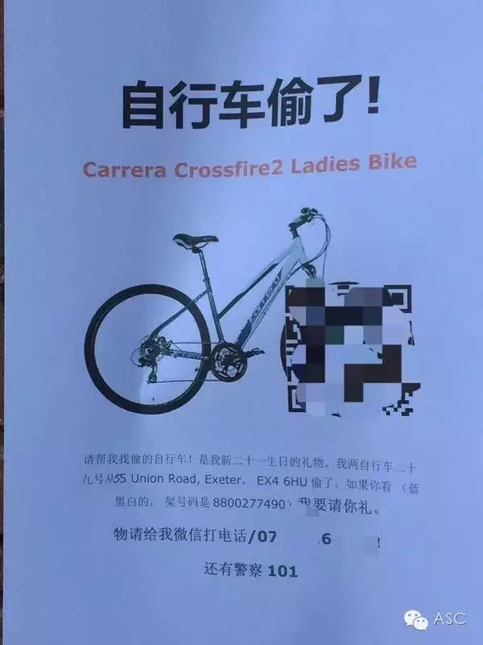

互惠动态
|
|
WTF！好不容易出个国，同学全是中国人？这是一种什么体验
很多童鞋在留学开学之前总有诸如此类憧憬：
脑补和来自世界各地的同学一起上课、做presentation；
在地道的英语环境下，口语突飞猛进。
也一样会有很多诸如此类的烦恼：
整个学校就我一个中国人该怎么办？
我该怎么适应？我英语不好，有问题该找谁？孤单寂寞冷。。。
这么想的话就too young too simple了
近年来，中国留学生已经充斥美国各大高校，尤其是商科硕士项目。所以，你可以考虑换一个烦恼了：
留学班级全是中国人是一种什么体验？
以下分享来自网友们：
@ lu nerove
让外国人不用出国就能体验留学
@ 金嘉伟
我所在的专业不至于那么清一色，但目测也有八成左右是国人。
去年除夕的时候，周三下午本来应该是两门课程，四个课时连上。那天下午，第一门课的老师有事要早退，第二节课不上。但是大部分人还得待在同一个阶梯教室，因为还有第二门课要上。
那这中间的一节课怎么过呢？
是的，大家一起在某阶梯教室里看YouTube上的春晚直播。
而班上的歪果仁全都遁去商学院底楼买咖啡了。
@ 邓笑笑
哈哈哈哈哈哈哈哈我喜欢这个问题！
商学院的歪果仁都被我们逼到什么程度？
每个人都有微信！
每个人！
小组第一次见面大家都掏出手机扫一扫
一看 诶 还有一两个歪果仁 怎么办！
歪果仁看了看我们
露出理解的微笑 掏出手机
Oh I have we chat!
真是好贴心啊有没有！
我一开始还觉得原来wechat已经这么international啦！好厉害哦～
结果发现…
好像有且仅有商学院的歪果仁有的…………
东西丢了肿么办
居然还有二维码这是谁教你的！

@匿名用户
一年过去了，感觉英语提高有限，但是粤语，河南话和东北话说的越来越溜，简直无缝切换。
@ 赵又奇
教授：今天那个印度朋友不在 我们可以用中文……
@ 俞亦奇
在上海坐地铁的时候觉得老外比原来上课时的还多
@杉木
你的感觉就是，在新东方上课
@ 欧木子小姐
一次在library门口听到一个歪果仁跟他朋友吐槽：" If you take a Chinese class, you can understand 90% students in this school."（如果你上了中文课，就能听懂这学校90%的学生的对话了。。。）
@ 何一血
我爸和我说，你知不知道你们学校有个外号叫清华，清一色的华人。
@ yxyang
写作课（asian american studies）的时候看电影，李安的喜宴。老师是第5代华裔也懂中文。
老师忘开英文字幕了……
结果……
全班10分钟之后才反应过来……
在这10分钟内80％的人都在讨论里面说的是不是上海话…
@ 刘若愚
刚好这学期上了一门100人里有94个中国人的Finance的课。
我为什么这么清楚这个数字，因为上上一周这门课临时换了一个老师，一个澳洲大叔，在这之前是个中国人。大叔一上来就问乃们这个班上有多少是中国人呀，哗黑压压举了一片，大叔说数不过来放下吧放下吧，乃们有多少不是中国来的？然后有6个人举手了，这门课有100人左右。
如今世界各个大学都有很多中国人而且逐年增加这是个客观现实，没必要回避，也没必要因此而影响你的留学计划。如果你想认识本地人和提高英语，方式其实有很多。住寄宿家庭、选修、打工、旅行，或者培养一些爱好加入一些社团。甚至你要是对宗教感兴趣的话还可以参加当地教会定期组织的活动。
总之，留学体验是自己创造的，班上中国人的多少和留学体验的好坏没有直接关系。

关于互惠，您了解得够多么？
请外国学生来家庭照顾孩子，辅导孩子外语？
只了解这些是不够的！
获取更多信息请参考以下方式：
联系ASC：
电话：86-21-61116069(上海中心）
86-25-66065662（南京中心）
全国家庭均可申请！
手机：15601666586（可加微信）
Q Q：3259637585
微信：asc-center
邮箱：info@asc-center.com
网站：www.asc-aupair.com

感谢您对我们的关注